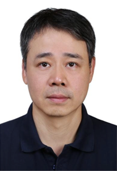

<td align="center" class="tbcolor10" colspan="2" valign="top">
<table border="0" cellpadding="0" height="100%" width="100%">
<tbody><tr><td align="right" height="35px" style="font-size:9pt">
<a href="javascript:window.close()" title="关闭本窗口">关闭窗口</a>｜<a href="print.asp?id=540213" target="_blank" title="打印本页内容">打印张贴版</a>    

</td></tr>
<tr>
<td align="center" height="500" valign="top">
<table border="0" cellpadding="4" cellspacing="0" height="100%" style="border-collapse: collapse;word-break:break-all;" width="86%">
<tbody><tr>
<td align="center" height="80px"><span style="font-family:方正小标宋简体;font-size: 25px;color: #C70E5C">【学术讲座】三维非易失存储芯片的技术发展与融合应用</span></td>
</tr>
<tr>
<td align="center" height="50px" style="font-size: 9pt"><font color="#808080">电子与信息工程学院　2025/1/7 9:47:00</font><br/> 
<font color="#F8F8F8" style="font-size:9pt">（钟沛基 2022280095）</font></td>
</tr>
<tr>
<td height="300" valign="top">
<p class="MsoNormal"><span style="font-family:宋体;mso-ascii-font-family:Calibri;
mso-ascii-theme-font:minor-latin;mso-fareast-theme-font:minor-fareast;
mso-hansi-font-family:Calibri;mso-hansi-theme-font:minor-latin"><b>演讲嘉宾</b>：陈杰智</span><span style="font-family:宋体;mso-ascii-font-family:Calibri;mso-ascii-theme-font:
minor-latin;mso-fareast-theme-font:minor-fareast;mso-hansi-font-family:Calibri;
mso-hansi-theme-font:minor-latin">教授，</span><span lang="EN-US"><o:p></o:p></span><span style="font-family: 宋体;">山东大学</span></p>
<p class="MsoNormal"><b><span style="font-family: 宋体;">邀</span> <span style="font-family: 宋体;">请</span> </b><span style="font-family: 宋体;"><b>人</b>：赵晓锦</span><span style="font-family: 宋体;">教授</span></p>
<p class="MsoNormal"><span style="font-family:宋体;mso-ascii-font-family:Calibri;
mso-ascii-theme-font:minor-latin;mso-fareast-theme-font:minor-fareast;
mso-hansi-font-family:Calibri;mso-hansi-theme-font:minor-latin"><b>时  间</b>：</span><span lang="EN-US">1</span><span style="font-family:宋体;mso-ascii-font-family:Calibri;
mso-ascii-theme-font:minor-latin;mso-fareast-theme-font:minor-fareast;
mso-hansi-font-family:Calibri;mso-hansi-theme-font:minor-latin">月</span><span lang="EN-US">8</span><span style="font-family:宋体;mso-ascii-font-family:Calibri;
mso-ascii-theme-font:minor-latin;mso-fareast-theme-font:minor-fareast;
mso-hansi-font-family:Calibri;mso-hansi-theme-font:minor-latin">日（星期三）</span><span lang="EN-US">09:30-10:30</span></p><p class="MsoNormal"><span lang="EN-US"></span></p><p class="MsoNormal"><span style="font-family:宋体;mso-ascii-font-family:Calibri;
mso-ascii-theme-font:minor-latin;mso-fareast-theme-font:minor-fareast;
mso-hansi-font-family:Calibri;mso-hansi-theme-font:minor-latin"><b>地  点：</b>致信楼</span><span lang="EN-US">N710</span><span style="font-family:宋体;mso-ascii-font-family:Calibri;
mso-ascii-theme-font:minor-latin;mso-fareast-theme-font:minor-fareast;
mso-hansi-font-family:Calibri;mso-hansi-theme-font:minor-latin">会议室</span><span lang="EN-US"><o:p></o:p></span></p><p class="MsoNormal"><span style="font-family: 宋体;">讲座内容简介：</span></p>
<p class="MsoNormal"><span style="font-family:宋体;mso-ascii-font-family:Calibri;
mso-ascii-theme-font:minor-latin;mso-fareast-theme-font:minor-fareast;
mso-hansi-font-family:Calibri;mso-hansi-theme-font:minor-latin">  存储器的三维架构相对于二维架构不仅增加了存储密度，还大幅度提升了存储器性能，然而其特殊器件工艺和阵列集成技术使其可靠性特性和优化策略变得更加复杂，尤其是随着堆叠层数的增加将面临着更为严峻的可靠性问题，包括写入和读取过程中的干扰，以及数据保持性退化等。本报告将介绍三维存储器器件工艺和集成应用最新进展，研究基于底层介质特性的系统协同优化策略，包括新型存储材料和单元阵列、高可靠存储系统设计、高精度存算架构等。同时，本报告将聚焦未来三维高密度微缩化关键技术，探讨如何结合底层材料和系统策略的协同优化来发展高性能、高密度、高可靠的存储系统，为海量数据的安全存储和高能效数据处理提供新型技术方案。</span><span lang="EN-US"><o:p></o:p></span></p>
<p class="MsoNormal"><span lang="EN-US" style="font-size:12.0pt;font-family:仿宋"><o:p> </o:p></span></p>
<p class="MsoNormal"><span style="font-family:宋体;mso-ascii-font-family:Calibri;
mso-ascii-theme-font:minor-latin;mso-fareast-theme-font:minor-fareast;
mso-hansi-font-family:Calibri;mso-hansi-theme-font:minor-latin">演讲嘉宾简介：</span><span lang="EN-US"><o:p></o:p></span></p>
<p class="MsoNormal"><span lang="EN-US"><o:p> </o:p></span></p>
<p class="MsoNormal"><span style="font-family:宋体;mso-ascii-font-family:Calibri;
mso-ascii-theme-font:minor-latin;mso-fareast-theme-font:minor-fareast;
mso-hansi-font-family:Calibri;mso-hansi-theme-font:minor-latin">  陈杰智，山东大学信息科学与工程学院院长，教授</span><span lang="EN-US">/</span><span style="font-family:宋体;mso-ascii-font-family:Calibri;
mso-ascii-theme-font:minor-latin;mso-fareast-theme-font:minor-fareast;
mso-hansi-font-family:Calibri;mso-hansi-theme-font:minor-latin">博士生导师。研究方向聚焦于高密度三维非易失存储芯片及</span><span lang="EN-US">CMOS</span><span style="font-family:宋体;mso-ascii-font-family:Calibri;
mso-ascii-theme-font:minor-latin;mso-fareast-theme-font:minor-fareast;
mso-hansi-font-family:Calibri;mso-hansi-theme-font:minor-latin">器件关键技术研究，近年来主持了国家自然科学基金委重点项目、重大研究计划项目、科技部重点研发项目课题等多项国家级研究项目课题，二十次在微电子集成电路国际顶级会议</span><span lang="EN-US">IEDM/VLSI Symposium</span><span style="font-family:宋体;mso-ascii-font-family:
Calibri;mso-ascii-theme-font:minor-latin;mso-fareast-theme-font:minor-fareast;
mso-hansi-font-family:Calibri;mso-hansi-theme-font:minor-latin">上报告研究进展，授权美国</span><span lang="EN-US">/</span><span style="font-family:宋体;mso-ascii-font-family:Calibri;
mso-ascii-theme-font:minor-latin;mso-fareast-theme-font:minor-fareast;
mso-hansi-font-family:Calibri;mso-hansi-theme-font:minor-latin">日本发明专利二十二项，授权中国发明专利九项。担任</span><span lang="EN-US">IEDM</span><span style="font-family:宋体;mso-ascii-font-family:Calibri;
mso-ascii-theme-font:minor-latin;mso-fareast-theme-font:minor-fareast;
mso-hansi-font-family:Calibri;mso-hansi-theme-font:minor-latin">、</span><span lang="EN-US">IMW</span><span style="font-family:宋体;mso-ascii-font-family:Calibri;
mso-ascii-theme-font:minor-latin;mso-fareast-theme-font:minor-fareast;
mso-hansi-font-family:Calibri;mso-hansi-theme-font:minor-latin">、</span><span lang="EN-US">IRPS</span><span style="font-family:宋体;mso-ascii-font-family:Calibri;
mso-ascii-theme-font:minor-latin;mso-fareast-theme-font:minor-fareast;
mso-hansi-font-family:Calibri;mso-hansi-theme-font:minor-latin">等多个国际重要学术会议技术委员。</span><span lang="EN-US"><o:p></o:p></span></p>
<p class="MsoNormal"><span lang="EN-US"><o:p> </o:p></span></p>
<p class="MsoNormal"><span style="font-family:宋体;mso-ascii-font-family:Calibri;
mso-ascii-theme-font:minor-latin;mso-fareast-theme-font:minor-fareast;
mso-hansi-font-family:Calibri;mso-hansi-theme-font:minor-latin"> 欢迎大家参加！</span><span lang="EN-US"><o:p></o:p></span></p><p class="MsoNormal" style="text-align: right;"><span style="font-family:宋体;mso-ascii-font-family:Calibri;
mso-ascii-theme-font:minor-latin;mso-fareast-theme-font:minor-fareast;
mso-hansi-font-family:Calibri;mso-hansi-theme-font:minor-latin">电子与信息工程学院</span></p><p class="MsoNormal" style="text-align: right;"><span style="font-family:宋体;mso-ascii-font-family:Calibri;
mso-ascii-theme-font:minor-latin;mso-fareast-theme-font:minor-fareast;
mso-hansi-font-family:Calibri;mso-hansi-theme-font:minor-latin">2025年1月6日</span></p><link href="/szu.css" rel="stylesheet" type="text/css"/><link href="/szu.css" rel="stylesheet" type="text/css"/></td>
</tr>
<tr><td height="0" style="font-size: 9pt"></td></tr>
<tr><td align="right" style="font-size: 9pt">撰稿：高志杰　审核：周浩江  <br/>（更新于2025/1/7 9:52:00）<br/> </td></tr>
</tbody></table>
</td>
</tr>
</tbody></table>
</td>
